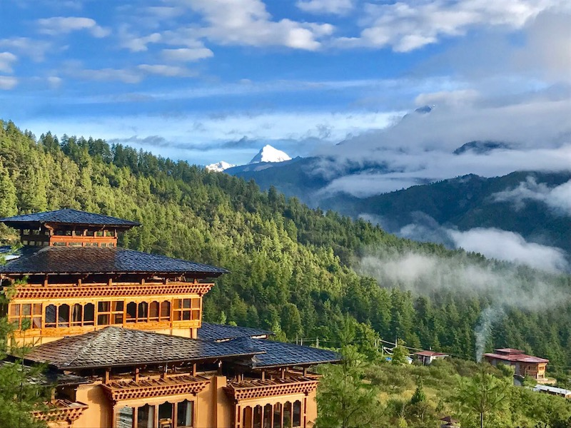
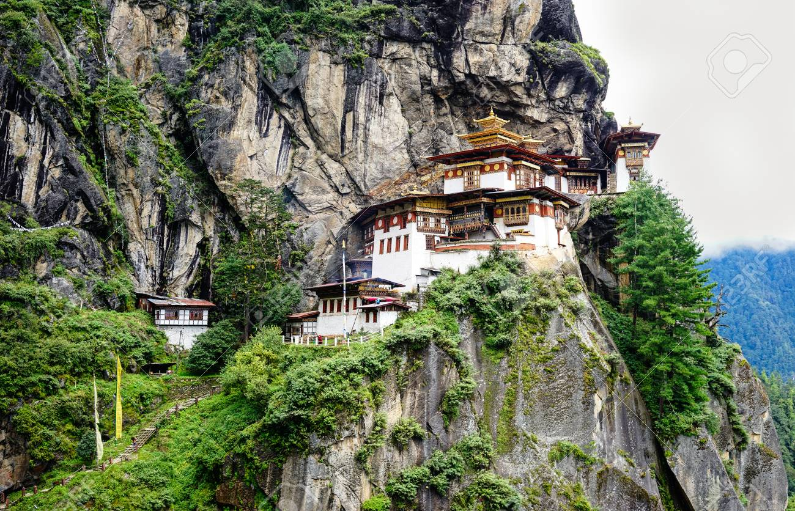
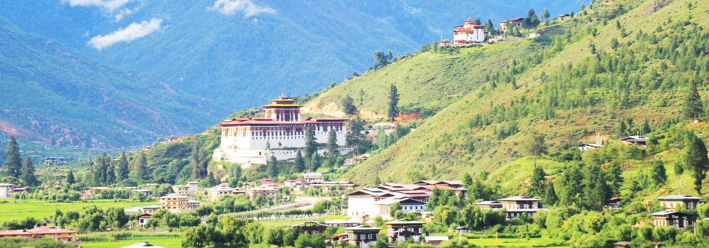
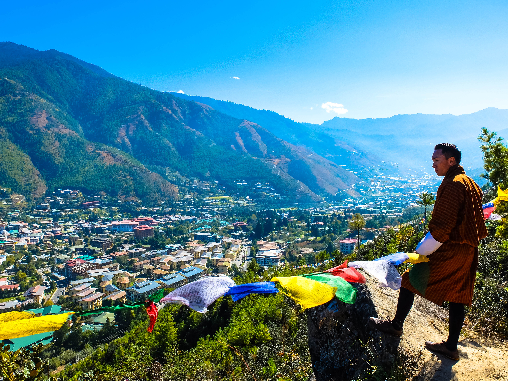
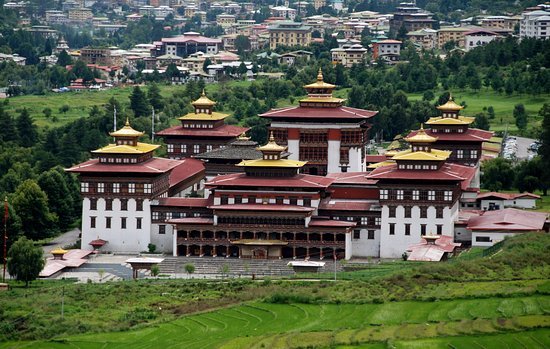
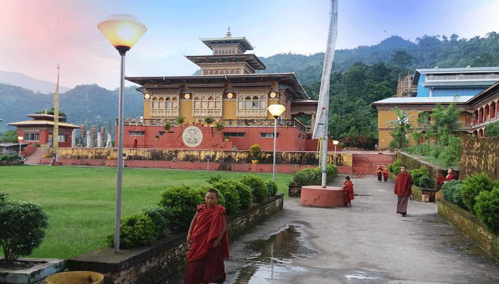
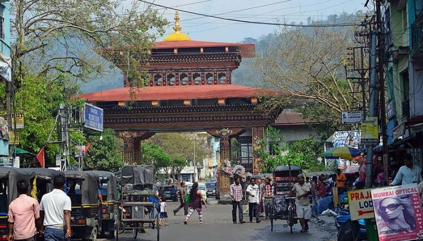

- Paro
Bután, un país pequeño, ubicado en el Himalaya entre la India y el Tíbet, también se lo conoce como el país más feliz del mundo. La buena gobernanza, el medio ambiente natural, el crecimiento sostenible y los valores culturales son los pilares del Índice Nacional Bruto de Felicidad en Bután.
Paro, un hermoso valle en el suroeste de la montañosa Bután, es uno de los destinos turísticos más atractivos del país. Es aproximadamente una hora y una hora y media en coche de Thimphu .

- Thimpu
Tan escondido informativamente como geográficamente, Bután ha preservado casi intactas su naturaleza y su cultura. Precisamente eso era lo que atraía mi atención cuando deslizaba mis dedos por el atlas, fijándome en ese escondrijo dibujado en el mapa de Asia. Un territorio que nunca ha sido conquistado. Una población que apenas se ha mezclado con otras, y donde la industrialización ha pasado de largo. Nuestro viaje a Bután comenzaba visitando su capital, Thimphu.
Conocer lo que ocurre en el resto del mundo no suscita demasiado interés en este pequeño y peculiar país, que mide su evolución mediante el índice de felicidad, y donde el primer televisor no se enchufó hasta 1999.

- Phuentsholing
Phuentsholing es el punto de entrada para los viajeros que llegan en autobús desde Kolkata y Siliguri y la ciudad funciona principalmente como un lugar donde los butaneses y los indios hacen negocios. La arquitectura es moderna y no hay dzong, famoso monasterio o, de hecho, nada de particular interés para los turistas. Sin embargo, como todo Bhután, ofrece un entorno limpio, agradable y seguro en el que hacer negocios. NB: Hasta 2005, era posible que los visitantes extranjeros ingresaran a la ciudad sin una visa bhutanesa. A excepción de los ciudadanos indios, esto ya no es posible. A los indios se les niega la entrada más allá del puesto de control en ausencia de un permiso.
